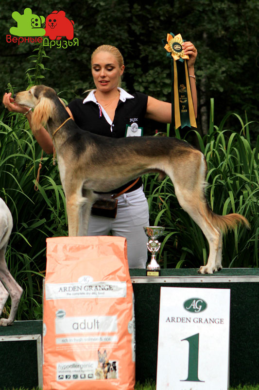
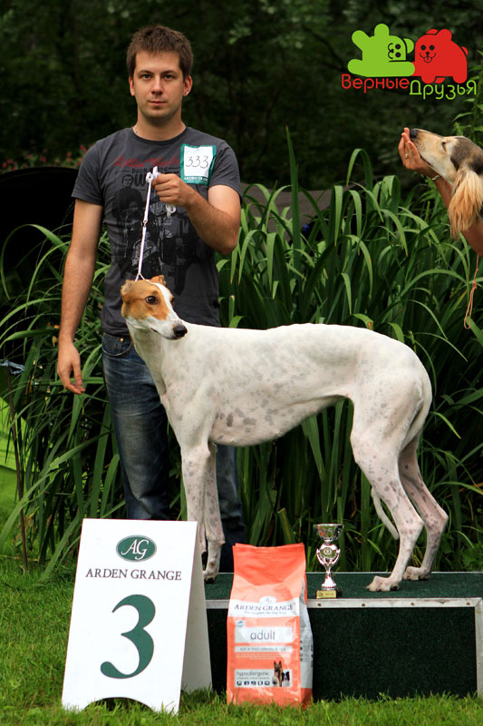
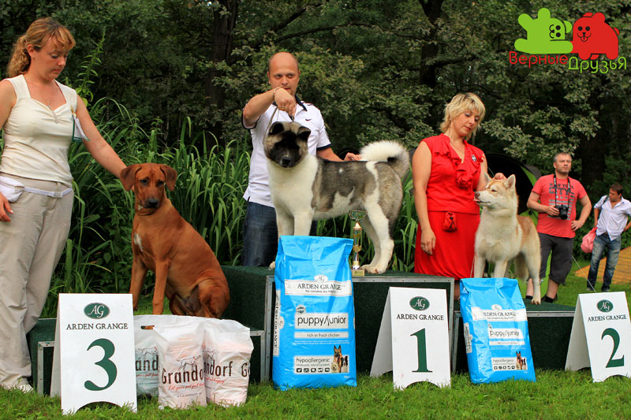

ЦЛЖ "ЛИДЕР И ПРЕСТИЖ"
4 АВГУСТА 2012 ГОДА
Сокольники, 3-й Лучевой Просек
ЭКСПЕРТЫ:
КРАКОВСКАЯ Л. (Москва),
КОРОБКОВА Г. (Москва), ЕГОРОВА Т. (Москва)
Количество собак - 341
ФОТООТЧЕТ С БЕСТОВ
BEST in SHOW (эксп. Краковская)
1 место: бульдог, НОРДЭН ВАЙТ ВЫСПЭ, вл. Кирилюк В.
2 место: малый вандейский бассет-гриффон, SPONTANICZNA WHISKI PRYJAZNEGENY, вл.Задеренко Т.
3 место: сибирский хаски, ERZULIE FREDA AQUA LIFE, Месилов С.
1 ГРУППА (эксп. Краковская)
1 место: схиперке, EBONY SAND`S JOINT VENTURE WITH LEYU, вл. Ахтомова
2 место: бордер колли, BRYNING B`DAZZLED, вл. Семина С.
2 ГРУППА (эксп. Коробкова)
1 место: бульдог, НОРДЕН ВАЙТ ВЫСПЭ, вл. Кирилюк В.
2 место: русский черный терьер, ФРАНКО ВАЛАДА`C СИЦИЛИЯ, вл. Никитенков А.
3 место: южноафриканский бурбуль, ВОЙС ВЕЛЬД АЙО, вл. Скворцова С.
3 ГРУППА (эксп. Коробкова)
1 место: фокстерьер ж/ш, ASH GROVE MADDOX, вл. Кот С.
2 место: йоркширский терьер, ГЛАМУР ШОУ ГРАНД МЕН, вл. Митуля Л.
3 место: керн терьер, DYOURBAHLER KLAB VANITY BAG, вл. Петрова И.
4 ГРУППА (эксп.Краковская)
1 место: такса г/ш, ДАКС ДИЗАЙН ЖОЗЕФИНА, вл. Юрьева В.
2 место: такса ж/ш, PROTSIONUS SIBILLA, вл. Загрядская М.
3 место: такса кроличья ж/ш, БЭБИ БУСИНКА, вл. Котикова О.
5 ГРУППА (эксп. Краковская)
1 место:сибирский хаски, ERZULIE FREDA AQUA LIFE, вл. Месилов С.
2 место: фараонова собака, REEDLY ROAD DESPERADO, вл. Евтеева М.
3 место: немецкий шпиц малый, ВСЕСЛАВ ИЗ ЛАСТОЧКИНОГО ГНЕЗДА, вл. Ласточкина С.
6 ГРУППА (эксп.Краковская)
1 место: малый вандейский бассет-гриффон, SPONTANICZNA WHISKI PRYJAZNE GENY, вл. Задеренко Т.
2 место: родезийский риджбек, КИМОЙО ФЕЛИЧЧИА ДИВИНА, вл. Ницуленко О.
3 место: бигль, PRUDENCE JOHNNIE ESTATE, вл. Хрящева Е.
7 ГРУППА (эксп.Краковская)
1 место: курцхаар, STAR K`S MILE HI CHARLOTTE, вл. Linda&Richard Stak
2 место: сеттер-гордон, SANGERFILD ENJOY YOUR DAY, вл. Давыдова Е.
9 ГРУППА (эксп. Коробкова)
1 место: пудель большой, ATAMI HARUTO, вл. Stolpner T.
2 место: китайская хохлатая, ?
3 место:чихуахуа г\ш, КРАСАВЕЦ КАЛИПСО, вл. Сытник М.
10 ГРУППА (эксп. Краковская)
1 место: салюки, АЛЬ НАФИСЭХ КАРАМ АЛЬ КАЛЕ, вл. Гришунина К.

2 место: русская псовая борзая, ЛЕЛЬ, вл. Чиркина Т.
3 место: грейхаунд, ВИКТОРИ СПРИНТ ЯРОСЛАВА СЕЛЕНА, вл. Квятковская М.

ЛУЧШИЙ БЭБИ (эксп.Коробкова)
1 место: сибирский хаски, СВОБОДНАЯ СТАЯ ТАЙНА, вл. Жианшина Г.
2 место: вест хайленд вайт терьер, OF STONEGARTH AMAZING LAD, вл. Китаев Д.

3 место: мопс, ВЕЛЬВЕТТА ДЛЯ НАТАЛИ ОТ ЛЮВАЛЬ, вл. Рябушкина
ЛУЧШИЙ ЩЕНОК (эксп.Коробкова)

1 место: американская акита, РЕСТАЙЛ-ИНГ БРАЙТ КРИСТАЛ, вл. Шаргородский И.
2 место: сибирский хаски, ERZULIE FREDA ASIA, вл. Проферансова А.
3 место: родезийский риджбек, МАШАМА МАЗИ РУС МАРДЖАНИ ЗУРИ, вл. Трушкова Т.
ЛУЧШИЙ ВЕТЕРАН (эксп.Коробкова)

1 место: фокстерьер ж/ш, PODAROK DLJA DRUGA, вл. Кот С.
2 место: такса г/ш, MOKKO MAKSIMUM PERI PLATINUM, вл. Мусиенко С.
ЛУЧШИЙ ЮНИОР (эксп.Краковская)
1 место: фараонова собака, РИДЛИ РОАД ИЛЛЮМИНЕЙТЕД, вл. Евтеева М.
2 место: доберман, SEVILIA IZ ZOOSFERY, вл. Григорьева Н.
3 место: фокстерьер ж/ш, ASH GROVE MADDOX, вл. Кот С.
КОНКУРС ПАР (эксп.Коробкова)
1 место: сибирский хаски
2 место: русская псовая борзая
3 место: среднеазиатская овчарка
КОНКУРС ПИТОМНИКОВ (эксп.Коробкова)
1 место: фараонова собака , "РИДЛИ РОАД", вл. Евтеева М.

ГОРДОСТЬ ОТЕЧЕСТВА (эксп.Краковская)
русский той д/ш, GRAND TANDEM ZHELEZNOE ALIBI, вл. Титова В.